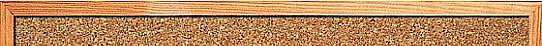
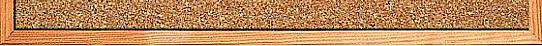

<div>
    <button (click)="close.emit()">close</button>
</div>

<div class="mid" *ngFor="let item of this.poeple">
    
<div class="star" >
   <!--  -->
   <svg viewBox='0 0 100 100' *ngFor="let stars of [].constructor(item.counter)" >
    <defs>
      <pattern id='g-image' width='100' height='100' patternUnits='userSpaceOnUse'>
        <image [attr.xlink:href]=item.img width='100' height='100' />
      </pattern>
    </defs>
    <path d='M0,25 L33,25 50,0 66,25 99,25 75,50 99,75 66,75 50,100 33,75  0,75 25,50z' />
  </svg>
</div>
</div>
